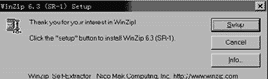
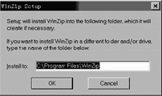
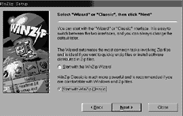
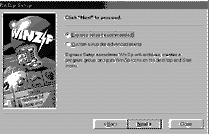
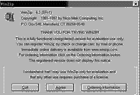

|
|
| 当前位置：电脑报电子版 > 1999 年 > 27 期 > 综合报道 > 电脑软件的安装（基础篇） |
| 《 电脑软件的安装（基础篇） 》 |
| 一旦拥有电脑，那么为电脑安装软件就是常事了。因此笔者根据使用电脑的经验介绍一些有关体会，供初学电脑的朋友在进行软件的安装时参考。为叙述方便，在这里我们根据软件的容量、功能和安装难易，将其粗略分为“大中型”和“小型”。这二者在安装难度和所用到的基础知识上都有较大差异。为此，我们在基础篇中，以WinZip的安装为例介绍“小型”及共享软件的安装过程和一般的安装知识；在提高篇中，以Office
97为例介绍“大中型”软件的安装过程和相关知识。 共享软件WinZip 6.3 SR－1（试用版）是应用于Windows 9.x中的压缩工具，常见的是一个自解压安装文件，我们可以从因特网（如湖南信息港 “http://soft.hn.cninfo.net/” 的软件库）或其它配套光盘中找到。由于它是一个小型工具软件，所以其安装过程比较简单，具体步骤如下： ①运行自解压文件 通过“开始”/“运行”／“浏览”选择光盘上的“Winzip95.exe”文件，再选“打开”／“确定”，程序的自解压包打开后自动运行并显示正式安装菜单，见图1。 ②确定软件安装目录 单击图1中“Setup”后显示图2，要求用户确定安装目录，一般使用其缺省目录并单击“OK”继续。  ③安装程序显示此软件的有关功能、使用协议等提示，可分别单击菜单上的“NEXT”和“YES”继续至图3。 ④选择程序启动时主菜单的形式 在图3上有两种选择，各人可根据自己的习惯选择，笔者选择“Start with Winzip Classic”后单击“NEXT”继续安装，显示图4。 ⑤确定程序安装方式 在图4中选择缺省方式“Express”后单击“NEXT”继续，安装程序开始拷贝文件，并在完成后建立了程序组，然后显示安装完成提示，在提示菜单上单击“Finish”完成安装。 但由于这是共享软件，所以在你进行注册之前每次使用它时都将显示一个提请注册的菜单（见图5），单击图5上的“I Agree”后才进入WinZip主菜单，但并不影响该软件功能和使用。 自此，WinZip的安装就完成了。非常简单吧！其他“小型”及共享软件的安装过程大同小异。 安装前的准备工作 认真阅读软件所附带的有关资料认真阅读有关资料的目的是了解待安装的软件对电脑软、硬件配置的要求，具体安装方法等。 正版软件都提供了安装说明书等资料，在这些资料中有该软件对电脑的系统配置（指对电脑的CPU、内存和硬盘空间，所使用的操作系统）要求和具体安装方法等。 报刊配套光盘等提供的免费或共享软件一般有刊社附加的简单说明，另外通过查阅光盘中的Readme等相关说明文件也能了解软件对安装的要求等类似内容。 查找并记录软件的安装序列码或CD－KEY码 出于类似目的，绝大部分商业软件都需使用序列码（或CD－KEY码）安装，这些序列码一般都标注在产品包装或说明书上。安装序列码和CD－KEY码在软件安装后形成特定的产品注册码，用户还可以使用这组注册码向软件生产商注册来获得今后的各种技术支持等服务。 备份硬盘上的重要文件和数据 此项内容同样只在进行系统软件安装或升级时才做。 无论是进行升级或新安装其它系统软件都必须事先对原硬盘上的重要文件或数据进行备份。因为在安装或升级系统文件时很可能会因硬件不兼容（包括安装过程中的电源中断）等原因而造成系统故障，这些故障极有可能造成有关硬盘上的数据和文件暂时丢失或彻底破坏。如果我们在进行系统软件安装或升级前没有进行必要的备份工作，那么将可能造成无法弥补的损失。这一点我们务必引起重视。 一般安装步骤 运行（或自动运行）软件的安装程序、自解压程序包光盘形式发行的商业软件（几乎所有的游戏软件）基本上都支持自动运行（具有Autorun文件），即光盘放入光驱（但需光驱的“自动插入通告”功能已经打开）后能自动进入安装主菜单，我们可以从此菜单开始进行安装。不支持自动运行安装程序的光盘或磁盘软件中也都有一个安装程序，如Windows 9.x大都以“Setup”为名；而在DOS中软件的安装程序则大都使用“Install”为名。 由于免费或共享软件多以自解压的压缩文件形式提供，所以通常只需运行该软件的自解压包文件即可安装。 而对以非自解压形式压缩文件提供的软件，则必须先解压到临时目录后再运行其中相应的安装程序进行安装。因此在进行安装前必须保证电脑已经安装了相应的解压缩程序。目前各类免费或共享软件大多使用“WinZip”进行压缩／解压缩，所以首先确保自己的电脑已经安装了这一工具软件。 安装程序公告软件有关协议 在大多数情况下用户都没有不同意该协议的权力。 输入使用软件的用户和所在单位（公司）名 输入软件安装密码（软件序列码或CD－KEY） 确定是否需要在“桌面”建立快捷图标 确定或修改安装程序为软件建立的缺省安装目录（文件夹） 确定软件的安装方式和安装规模 应用软件在安装时可以选择“典型”、“定制”等各种安装方式，例如安装Windows 9.x时就可以在“典型安装”、“便携安装”、“袖珍安装”以及“定制安装”四种方式中选择，在英文版软件安装中“典型”就是“Express”，“定制”就是“Custom”。一般来说“典型”安装就是基本上不需要安装人员进行干预而快速进行；而“定制”方式安装则需要操作人员对软件比较熟悉，这样才能根据具体情况进行安装文件的取舍以保证软件安装后的正常运行。所以一般软件安装时大都使用“典型”或“Express”作为缺省方式 安装程序拷贝文件过程。 安装程序自动进行，而且通常都用百分比显示文件拷贝的进度。 确定或修改软件相关目录 例如安装微软的Outlook Express时需确定E－mail等文件的存放目录。 建立程序组 安装程序自动进行。 确定是否进行软件注册 正版软件在安装后即可通过因特网或长途电话向软件生产商进行注册，注册的目的是继续得到生产商的技术支持，而共享软件的注册则主要是获得正式使用权。 共享软件安装试用满意后需向软件编制者（或公司）进行注册，在付出一定的费用后可得到由软件编制者提供的注册码，使用此注册码对软件进行注册后就能长期正常使用，不然将会在试用期满后经常弹出提请注册的菜单（很烦！），而有的共享软件在试用期满后根本就无法使用。有些免费软件也要求用户（通过因特网或其他方式）向编制者注册，但其注册目的主要是让软件编制者了解用户使用情况，并经常向你提供该软件的版本更新情况，免费软件注册时通常只需提供使用者个人部分资料而无须其它费用。 结束安装或结束安装并同时重新启动系统 重新启动系统一般只在安装系统软件或安装某些游戏软件需更新或升级DirectX等API（应用程序接口）版本时才进行。 （特约撰稿人 李肖峰） |
| 下载本期推荐软件 | 页 首 |
| 《电脑报》版权所有，电脑报网站编辑部设计制作发布 |